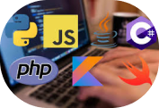

Tesla зерттеушілері Tesla-ны бұзғаны үшін $100 000 және Model 3 электромобиль алды
Осы аптада Ванкуверде өтіп жатқан Pwn2Own ақпараттық қауіпсіздік конференциясы аясында зерттеушілер Tesla қауіпсіздік жүйесін екі рет бұзып үлгерді. Бұл үшін олар 100 000 доллар сыйақы мен Tesla Model 3 электромобильіне ие болды.Тесла ұзақ уақыт бойы электр көліктерінде қолданылатын бағдарламалық қамтамасыз етудің қауіпсіздігін жақсартумен айналысып келеді және бірнеше жылдан бері жыл сайынғы Pwn2Own конференциясына қатысып келеді. Ағымдағы шара аясында зерттеушілер Tesla қауіпсіздік жүйесіне екі рет сәтті шабуыл жасады.

Бағдарламалау тілдеріне сұраныс рейтингі
GitHub-тағы ең танымал бағдарламалау тілі - JavaScript. Содан кейін Python, Java, Typescript және C# келеді. Алтыншы орынды PHP тілін жетінші жолға ауыстырған C++ тілі алады. Сонымен қатар, алғашқы ондыққа Shell, C және Ruby кіреді. Ең жоғары өсу қарқынын Hashicorp Configuration Language (HCL) көрсетті - 2021 жылмен салыстырғанда 56% жоғары. Rust танымалдылығы 50,5%-ға, TypeScript 37,8%-ға өсті. Ең жылдам дамып келе жатқан 10 тілге сонымен қатар Lua, Go, Shell, Makefile, C, Kotlin және Python кірді. Жалпы, GitHub әзірлеушілері 500-ге жуық әртүрлі бағдарламалау тілдерін пайдаланады.
Google ресейлік YouTube блогерлерінің монетизациясын бұғаттай бастады
Google-дан жағымсыз жаңалықтар келе бастады. Сәуір айының басында көптеген YouTube блогерлері Google-дан AdSense есептік жазбасын бұғаттау туралы жағымсыз хабарландырулар ала бастады. Бұл бейне арқылы монетизация мүмкіндігі толығымен бұғатталғанын білдіреді. Google-дың айтуынша, бұғаттау туралы шешімге арнайы өтініш толтыру арқылы дау айтуға болады, бірақ әзірге желідегі блокты жоюдың оң нәтижесі жоқ. Мысалы, 120 000-ға жуық жазылушысы бар youtube желісіндегі «Ne Sharyu» арнасы бұғатталды.